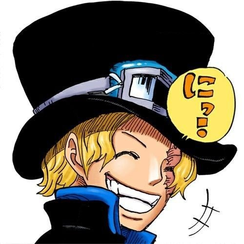

"One Piece" é uma série de manga e anime que cativou audiências em todo o mundo com sua narrativa emocionante e personagens memoráveis. Criada por Eiichiro Oda, a história segue as aventuras de Monkey D. Luffy, um jovem pirata com poderes de uma Fruta do Diabo que o torna elástico. Luffy aspira a se tornar o Rei dos Piratas e parte em uma jornada épica para encontrar o lendário tesouro conhecido como One Piece. O mundo de "One Piece" é um cenário fictício repleto de ilhas exóticas e vastos oceanos. Neste mundo, piratas, marinheiros e várias facções competem pelo poder e riquezas. Um elemento distintivo é a presença das Frutas do Diabo, que conferem habilidades especiais aos que as consomem, mas os tornam incapazes de nadar. Luffy forma uma tripulação diversificada, os Piratas do Chapéu de Palha, cada membro trazendo habilidades únicas e personalidades cativantes. Juntos, eles navegaram pela Grand Line enfrentando inúmeros desafios, desde piratas rivais até agentes do Governo Mundial e os Sete Guerrilheiros do Mar. O Governo Mundial e a Marinha são as principais forças antagonistas da série, visando manter a ordem no mundo e reprimir os piratas. O Almirante Akainu é um dos principais antagonistas da história. A busca de Luffy pelo One Piece está intimamente relacionada à descoberta dos Poneglyphs, inscrições antigas que contêm informações cruciais sobre a verdadeira história do mundo e a localização do tesouro lendário. Ao longo de sua jornada, Luffy também confronta os quatro piratas mais poderosos do mundo, conhecidos como os Yonkou. A série é conhecida por seu desenvolvimento de personagens profundo, histórias de fundo emocionantes e temas de amizade, coragem e determinação. "One Piece" é uma das franquias de entretenimento mais bem-sucedidas do mundo, continuando a encantar fãs com sua ação empolgante, comédia e momentos emocionantes.


-
Sabo
 -
Luffy
-
Ace